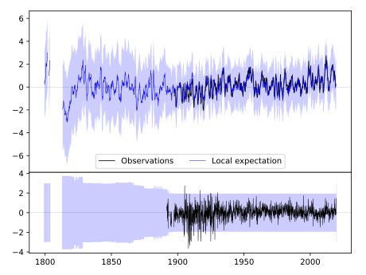
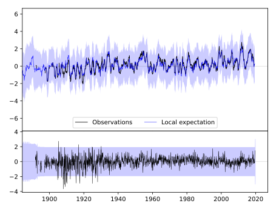
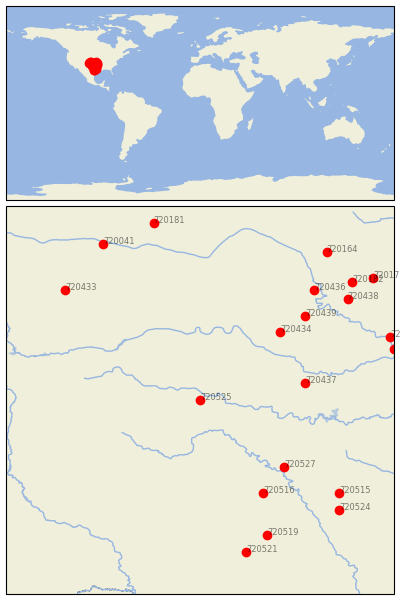

QUANAH 2 SW [USA]


| Neighbour | Name | Country | Distance | Lon/Lat | Years |
|---|
| 720525 | QUANAH 2 SW | USA | 0 | -99.8, 34.3 | 1891-2019 |
| 720437 | PAULS VALLEY 4 WSW | USA | 233 | -97.3, 34.7 | 1892-2019 |
| 720434 | KINGFISHER | USA | 248 | -97.9, 35.9 | 1893-2019 |
| 720527 | WEATHERFORD | USA | 256 | -97.8, 32.7 | 1893-2019 |
| 720516 | DUBLIN 2SE | USA | 281 | -98.3, 32.1 | 1893-2019 |
| 720439 | PERRY | USA | 317 | -97.3, 36.3 | 1893-2019 |
| 720436 | NEWKIRK 1NW | USA | 378 | -97.1, 36.9 | 1893-2019 |
| 720519 | LAMPASAS | USA | 386 | -98.2, 31.1 | 1888-2019 |
| 720515 | CORSICANA | USA | 392 | -96.5, 32.1 | 1874-2019 |
| 720433 | KENTON | USA | 408 | -103.0, 36.9 | 1893-2019 |
| 720521 | LLANO | USA | 413 | -98.7, 30.7 | 1891-2019 |
| 720438 | PAWHUSKA | USA | 414 | -96.3, 36.7 | 1893-2019 |
| 720524 | MEXIA | USA | 422 | -96.5, 31.7 | 1888-2019 |
| 720441 | WEBBERS FALLS 5 WSW | USA | 440 | -95.2, 35.5 | 1892-2019 |
| 720435 | MUSKOGEE | USA | 442 | -95.3, 35.8 | 1892-2019 |
| 720182 | SEDAN | USA | 450 | -96.2, 37.1 | 1885-2019 |
| 720041 | HOLLY | USA | 460 | -102.1, 38.0 | 1893-2019 |
| 720164 | EL DORADO | USA | 473 | -96.8, 37.8 | 1886-2019 |
| 720181 | SCOTT CITY | USA | 477 | -100.9, 38.5 | 1889-2019 |
| 720171 | INDEPENDENCE | USA | 490 | -95.7, 37.2 | 1872-2019 |